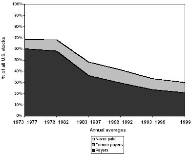

The most dangerous untruths are truths slightly distorted.
—G. C. Lichtenberg
Perhaps no other part of The Intelligent Investor was more drastically changed by Graham than this. In the first edition, this chapter was one of a pair that together ran nearly 34 pages. That original section (“The Investor as Business Owner”) dealt with shareholders’ voting rights, ways of judging the quality of corporate management, and techniques for detecting conflicts of interest between insiders and outside investors. By his last revised edition, however, Graham had pared the whole discussion back to less than eight terse pages about dividends.
Why did Graham cut away more than three-quarters of his original argument? After decades of exhortation, he evidently had given up hope that investors would ever take any interest in monitoring the behavior of corporate managers.
But the latest epidemic of scandal—allegations of managerial misbehavior, shady accounting, or tax maneuvers at major firms like AOL, Enron, Global Crossing, Sprint, Tyco, and WorldCom—is a stark reminder that Graham’s earlier warnings about the need for eternal vigilance are more vital than ever. Let’s bring them back and discuss them in light of today’s events.
Graham begins his original (1949) discussion of “The Investor as Business Owner” by pointing out that, in theory, “the stockholders as a class are king. Acting as a majority they can hire and fire managements and bend them completely to their will.” But, in practice, says Graham,
the shareholders are a complete washout. As a class they show neither intelligence nor alertness. They vote in sheeplike fashion for whatever the management recommends and no matter how poor the management’s record of accomplishment may be…. The only way toinspire the average American shareholder to take any independently intelligent action would be by exploding a firecracker under him…. We cannot resist pointing out the paradoxical fact that Jesus seems to have been a more practical businessman than are American shareholders. 1
Graham wants you to realize something basic but incredibly profound: When you buy a stock, you become an owner of the company. Its managers, all the way up to the CEO, work for you. Its board of directors must answer to you. Its cash belongs to you. Its businesses are your property. If you don’t like how your company is being managed, you have the right to demand that the managers be fired, the directors be changed, or the property be sold. “Stockholders,” declares Graham, “should wake up.” 2
Today’s investors have forgotten Graham’s message. They put most of their effort into buying a stock, a little into selling it—but none into owning it. “Certainly,” Graham reminds us, “there is just as much reason to exercise care and judgment in being as in becoming a stockholder.” 3
So how should you, as an intelligent investor, go about being an intelligent owner? Graham starts by telling us that “there are just two basic questions to which stockholders should turn their attention:
You should judge the efficiency of management by comparing each company’s profitability, size, and competitiveness against similar firms in its industry. What if you conclude that the managers are no good? Then, urges Graham,
A few of the more substantial stockholders should become convinced that a change is needed and should be willing to work toward that end. Second, the rank and file of the stockholders should be open-minded enough to read the proxy material and to weigh the arguments on both sides. They must at least be able to know when their company has been unsuccessful and be ready to demand more than artful platitudes as a vindication of the incumbent management. Third, it would be most helpful, when the figures clearly show that the results are well below average, if it became the custom to call in outside business engineers to pass upon the policies and competence of the management. 5
THE ENRON END-RUN
Back in 1999, Enron Corp. ranked seventh on the Fortune 500 list of America’s top companies. The energy giant’s revenues, assets, and earnings were all rising like rockets.
But what if an investor had ignored the glamour and glittering numbers—and had simply put Enron’s 1999 proxy statement under the microscope of common sense? Under the heading “Certain Transactions,” the proxy disclosed that Enron’s chief financial officer, Andrew Fastow, was the “managing member” of two partnerships, LJM1 and LJM2, that bought “energy and communications related investments.” And where was LJM1 and LJM2 buying from? Why, where else but from Enron! The proxy reported that the partnerships had already bought $170 million of assets from Enron—sometimes using money borrowed from Enron.
The intelligent investor would immediately have asked:
- Did Enron’s directors approve this arrangement? (Yes, said the proxy.)
- Would Fastow get a piece of LJM’s profits? (Yes, said the proxy.)
- As Enron’s chief financial officer, was Fastow obligated to act exclusively in the interests of Enron’s shareholders? (Of course.)
- Was Fastow therefore duty-bound to maximize the price Enron obtained for any assets it sold? (Absolutely.)
- But if LJM paid a high price for Enron’s assets, would that lower LJM’s potential profits—and Fastow’s personal income? (Clearly.)
- On the other hand, if LJM paid a low price, would that raise profits for Fastow and his partnerships, but hurt Enron’s income? (Clearly.)
- Should Enron lend Fastow’s partnerships any money to buy assets from Enron that might generate a personal profit for Fastow? (Say what?!)
- Doesn’t all this constitute profoundly disturbing conflicts of interest? (No other answer is even possible.)
- What does this arrangement say about the judgment of the directors who approved it? (It says you should take your investment dollars elsewhere.)
Two clear lessons emerge from this disaster: Never dig so deep into the numbers that you check your common sense at the door, and always read the proxy statement before (and after) you buy a stock.
What is “proxy material” and why does Graham insist that you read it? In its proxy statement, which it sends to every shareholder, a company announces the agenda for its annual meeting and discloses details about the compensation and stock ownership of managers and directors, along with transactions between insiders and the company. Shareholders are asked to vote on which accounting firm should audit the books and who should serve on the board of directors. If you use your common sense while reading the proxy, this document can be like a canary in a coal mine—an early warning system signaling that something is wrong. (See the Enron sidebar above.)
Yet, on average, between a third and a half of all individual investors cannot be bothered to vote their proxies. 6 Do they even read them?
Understanding and voting your proxy is as every bit as fundamental to being an intelligent investor as following the news and voting your conscience is to being a good citizen. It doesn’t matter whether you own 10% of a company or, with your piddling 100 shares, just 1/10.000 of 1%. If you’ve never read the proxy of a stock you own, and the company goes bust, the only person you should blame is yourself. If you do read the proxy and see things that disturb you, then:
Graham had another idea that could benefit today’s investors:
…there are advantages to be gained through the selection of one or more professional and independent directors. These should be men of wide business experience who can turn a fresh and expert eye on the problems of the enterprise…. They should submit a separateannual report, addressed directly to the stockholders and containing their views on the major question which concerns the owners of the enterprise: “Is the business showing the results for the outside stockholder which could be expected of it under proper management? If not, why—and what should be done about it? 7
One can only imagine the consternation that Graham’s proposal would cause among the corporate cronies and golfing buddies who constitute so many of today’s “independent” directors. (Let’s not suggest that it might send a shudder of fear down their spines, since most independent directors do not appear to have a backbone.)
Now let’s look at Graham’s second criterion—whether management acts in the best interests of outside investors. Managers have always told shareholders that they—the managers—know best what to do with the company’s cash. Graham saw right through this managerial malarkey:
A company’s management may run the business well and yet not give the outside stockholders the right results for them, because its efficiency is confined to operations and does not extend to the best use of the capital. The objective of efficient operation is to produce at low cost and to find the most profitable articles to sell. Efficient finance requires that the stockholders’ money be working in forms most suitable to their interest. This is a question in which management, as such, has little interest. Actually, it almost always wants as much capital from the owners as it can possibly get, in order to minimize its own financial problems. Thus the typical management will operate with more capital than necessary, if the stockholders permit it—which they often do. 8
In the late 1990s and into the early 2000s, the managements of leading technology companies took this “Daddy-Knows-Best” attitude to new extremes. The argument went like this: Why should you demand a dividend when we can invest that cash for you and turn it into a rising share price? Just look at the way our stock has been going up—doesn’t that prove that we can turn your pennies into dollars better than you can?
Incredibly, investors fell for it hook, line, and sinker. Daddy Knows Best became such gospel that, by 1999, only 3.7% of the companies that first sold their stock to the public that year paid a dividend—down from an average of 72.1% of all IPOs in the 1960s. 9 Just look at how the percentage of companies paying dividends (shown in the dark area) has withered away:
FIGURE 19-1
Who Pays Dividends?

Source: Eugene Fama and Kenneth French, “Disappearing Dividends,” Journal of Financial Economics, April 2001.
But Daddy Knows Best was nothing but bunk. While some companies put their cash to good use, many more fell into two other categories: those that simply wasted it, and those that piled it up far faster than they could possibly spend it.
In the first group, Priceline.com wrote off $67 million in losses in 2000 after launching goofy ventures into groceries and gasoline, while Amazon.com destroyed at least $233 million of its shareholders’ wealth by “investing” in dot-bombs like Webvan and Ashford.com. 10 And the two biggest losses so far on record—JDS Uniphase’s $56 billion in 2001 and AOL Time Warner’s $99 billion in 2002—occurred after companies chose not to pay dividends but to merge with other firms at a time when their shares were obscenely overvalued. 11
In the second group, consider that by late 2001, Oracle Corp. had piled up $5 billion in cash. Cisco Systems had hoarded at least $7.5 billion. Microsoft had amassed a mountain of cash $38.2 billion high—and rising by an average of more than $2 million per hour. 12 Just how rainy a day was Bill Gates expecting, anyway?
So the anecdotal evidence clearly shows that many companies don’t know how to turn excess cash into extra returns. What does the statistical evidence tell us?
In short, most managers are wrong when they say that they can put your cash to better use than you can. Paying out a dividend does not guarantee great results, but it does improve the return of the typical stock by yanking at least some cash out of the managers’ hands before they can either squander it or squirrel it away.
What about the argument that companies can put spare cash to better use by buying back their own shares? When a company repurchases some of its stock, that reduces the number of its shares outstanding. Even if its net income stays flat, the company’s earnings per share will rise, since its total earnings will be spread across fewer shares. That, in turn, should lift the stock price. Better yet, unlike a dividend, a buyback is tax-free to investors who don’t sell their shares. 15 Thus it increases the value of their stock without raising their tax bill. And if the shares are cheap, then spending spare cash to repurchase them is an excellent use of the company’s capital. 16
All this is true in theory. Unfortunately, in the real world, stock buybacks have come to serve a purpose that can only be described as sinister. Now that grants of stock options have become such a large part of executive compensation, many companies—especially in high-tech industries—must issue hundreds of millions of shares to give to the managers who exercise those stock options. 17 But that would jack up the number of shares outstanding and shrink earnings per share. To counteract that dilution, the companies must turn right back around and repurchase millions of shares in the open market. By 2000, companies were spending an astounding 41.8% of their total net income to repurchase their own shares—up from 4.8% in 1980. 18
Let’s look at Oracle Corp., the software giant. Between June 1, 1999, and May 31, 2000, Oracle issued 101 million shares of common stock to its senior executives and another 26 million to employees at a cost of $484 million. Meanwhile, to keep the exercise of earlier stock options from diluting its earnings per share, Oracle spent $5.3 billion— or 52% of its total revenues that year —to buy back 290.7 million shares of stock. Oracle issued the stock to insiders at an average price of $3.53 per share and repurchased it at an average price of $18.26. Sell low, buy high: Is this any way to “enhance” shareholder value? 19
By 2002, Oracle’s stock had fallen to less than half its peak in 2000. Now that its shares were cheaper, did Oracle hasten to buy back more stock? Between June 1, 2001, and May 31, 2002, Oracle cut its repurchases to $2.8 billion, apparently because its executives and employees exercised fewer options that year. The same sell-low, buy-high pattern is evident at dozens of other technology companies.
What’s going on here? Two surprising factors are at work:
No wonder CEOs would much rather buy back stock than pay dividends—regardless of how overvalued the shares may be or how drastically that may waste the resources of the outside shareholders.
Finally, drowsy investors have given their companies free rein to over-pay executives in ways that are simply unconscionable. In 1997, Steve Jobs, the cofounder of Apple Computer Inc., returned to the company as its “interim” chief executive officer. Already a wealthy man, Jobs insisted on taking a cash salary of $1 per year. At year-end 1999, to thank Jobs for serving as CEO “for the previous 2 1/2 years without compensation,” the board presented him with his very own Gulfstream jet, at a cost to the company of a mere $90 million. The next month Jobs agreed to drop “interim” from his job title, and the board rewarded him with options on 20 million shares. (Until then, Jobs had held a grand total of two shares of Apple stock.)
The principle behind such option grants is to align the interests of managers with outside investors. If you are an outside Apple shareholder, you want its managers to be rewarded only if Apple’s stock earns superior returns. Nothing else could possibly be fair to you and the other owners of the company. But, as John Bogle, former chairman of the Vanguard funds, points out, nearly all managers sell the stock they receive immediately after exercising their options. How could dumping millions of shares for an instant profit possibly align their interests with those of the company’s loyal long-term shareholders?
In Jobs’ case, if Apple stock rises by just 5% annually through the beginning of 2010, he will be able to cash in his options for $548.3 million. In other words, even if Apple’s stock earns no better than half the long-term average return of the overall stock market, Jobs will land a half-a-billion dollar windfall. 22 Does that align his interests with those of Apple’s shareholders—or malign the trust that Apple’s shareholders have placed in the board of directors?
Reading proxy statements vigilantly, the intelligent owner will vote against any executive compensation plan that uses option grants to turn more than 3% of the company’s shares outstanding over to the managers. And you should veto any plan that does not make option grants contingent on a fair and enduring measure of superior results— say, outperforming the average stock in the same industry for a period of at least five years. No CEO ever deserves to make himself rich if he has produced poor results for you.
Let’s go back to Graham’s suggestion that every company’s independent board members should have to report to the shareholders in writing on whether the business is properly managed on behalf of its true owners. What if the independent directors also had to justify the company’s policies on dividends and share repurchases? What if they had to describe exactly how they determined that the company’s senior management was not overpaid? And what if every investor became an intelligent owner and actually read that report?